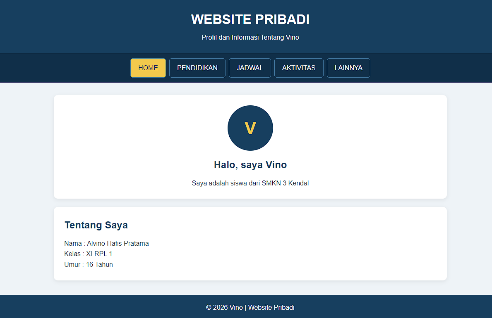
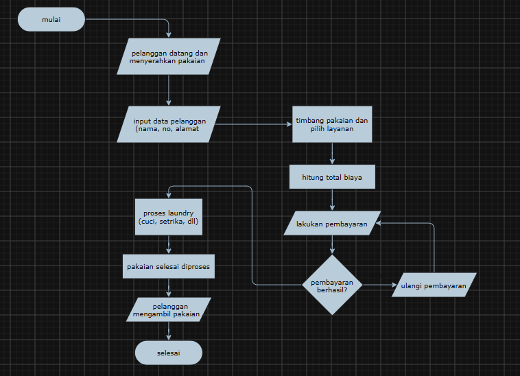
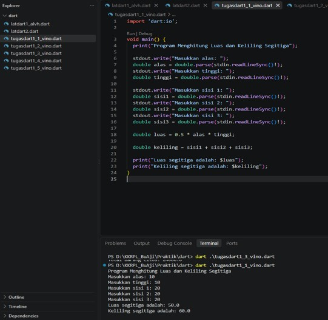
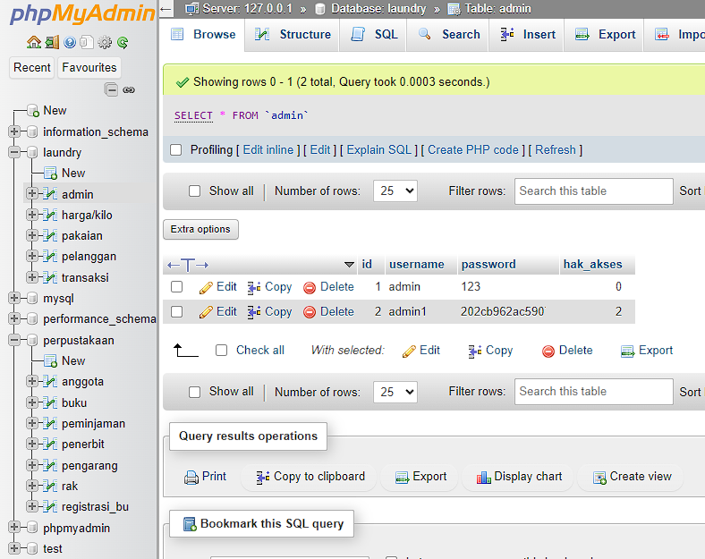
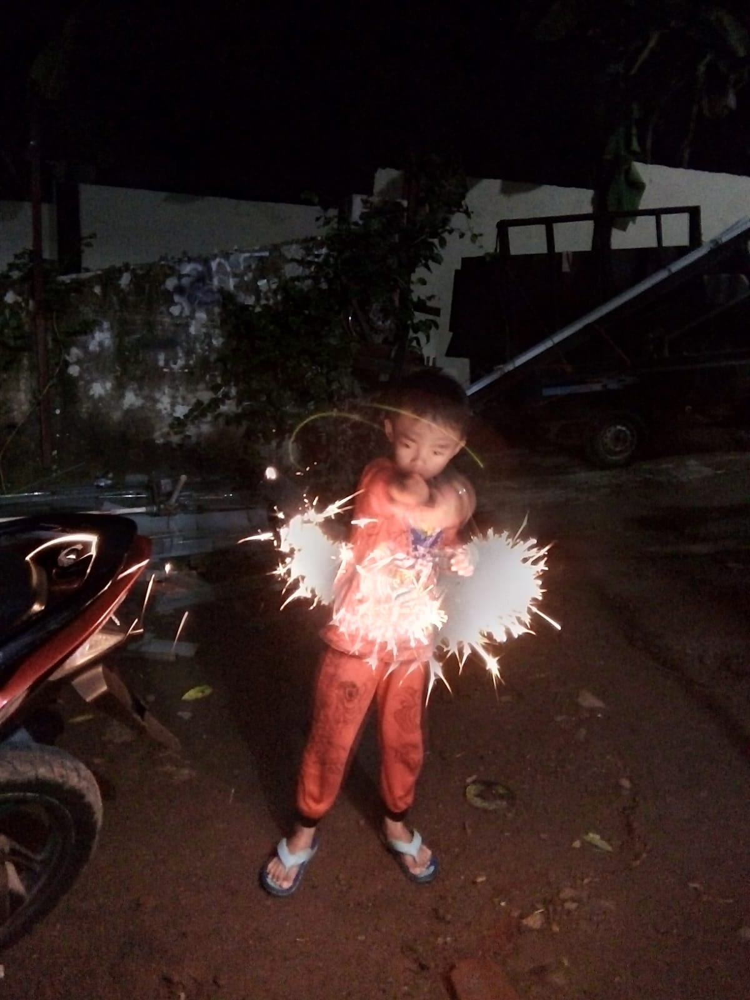
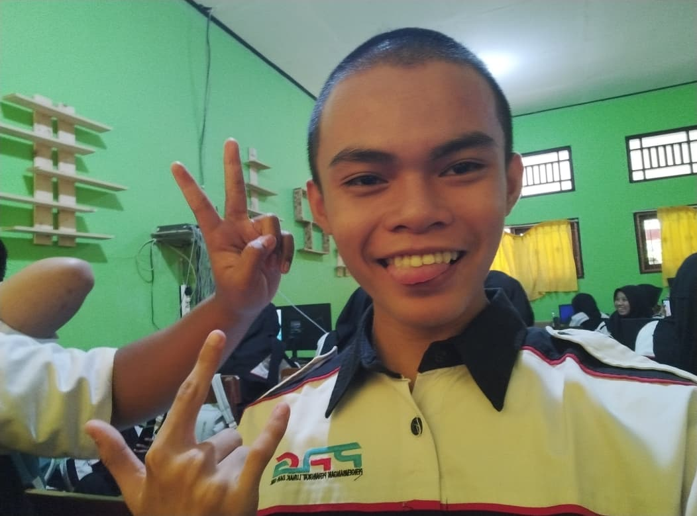
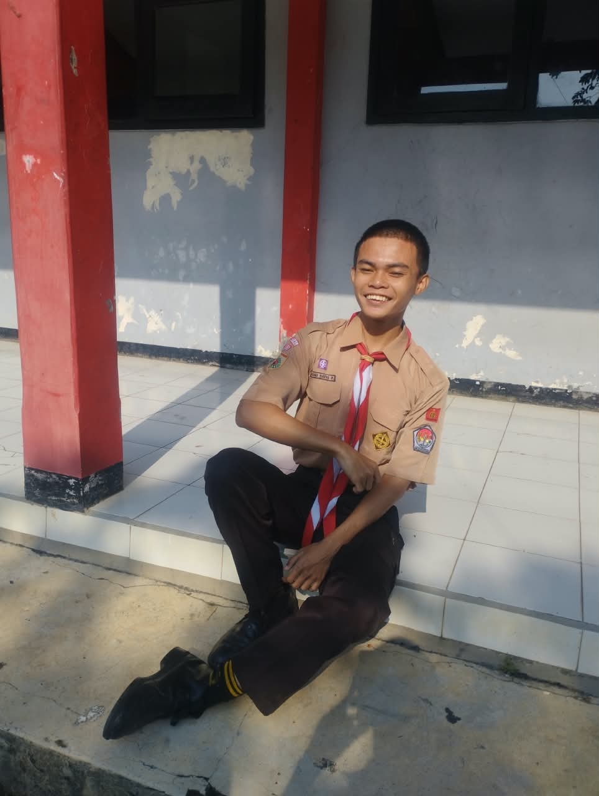

HALO, PERKENALKAN SAYA
Alvino Hafis Pratama
Siswa SMKN 3 KENDAL, Jurusan Rekayasa Perangkat Lunak(RPL)
Tentang Saya
HALO, PERKENALKAN SAYA
PROFILE
ABOUT ME
Saya adalah seorang siswa yang memiliki kepribadian ceria dan se-adanya. Saya senang berinteraksi dengan orang lain dan memiliki rasa ingin tahu yang tinggi. Saya lebih suka mengerjakan tugas sendiri, karena menurut saya itu adalah cara terbaik untuk belajar dan memahami sesuatu dengan lebih baik.
EDUCATION
Sekolah Dasar
Sekolah Menengah Pertama
Rekayasa Perangkat Lunak
-EXPERIENCE-
1. Pramuka
2. B Jepang
3. IT Software
4. B Inggris
MY STRENGTHS
Saya memiliki kemampuan untuk memahami sesuatu dengan cepat dan mudah.
Saya senang mencoba hal-hal baru dan tidak takut untuk menghadapi tantangan.
Saya memiliki ketertarikan yang besar terhadap teknologi.
Saya memiliki kemampuan untuk bersabar dalam menghadapi situasi yang sulit.
MY SKILLS
HTML
Membuat struktur dasar halaman website
CSS
Mengatur tampilan, warna, layout, dan desain website
C#
Memahami dasar-dasar pemrograman C# dan membuat program sederhana
SQL / Database
Membuat dan mengelola database serta tabel
MY WORK

Project website menggunakan HTML dan CSS.

Perancangan sistem laundry menggunakan DFD, Flowchart, dan ERD.

Program sederhana menggunakan bahasa Dart.

Membuat dan mengelola database menggunakan SQL.
GALLERY


